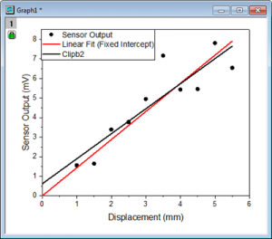

FAQ-805 再計算の前後で曲線を比較するにはどのようにしたらよいですか？
最終更新日:2015/9/12
Origin2016Sr1では、プロットを、グラフウィンドウにコピーして貼り付けることができます。これで、再計算の前後で曲線を比較することができます。
例えば、
- 散布図で線形フィットを実行して、フィット曲線（赤い線）を作成します。
- フィット曲線上でクリックして、Ctrl+Cでコピーして、
- Ctrl + Vで、同じグラフに線を貼り付けると、黒い線「Clipb2」が貼り付きます。
- 緑の錠前マークをクリックし、コンテキストメニューからパラメータを変更を選びます。
- 開いたダイアログで、切片を0にします。
- これで、切片を修正する前と後のフィット曲線を比較することができます。
- 
キーワード:再計算、曲線の比較、パラメータを変更